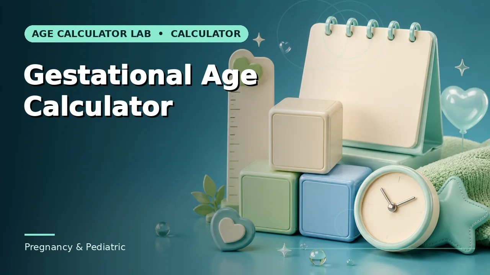
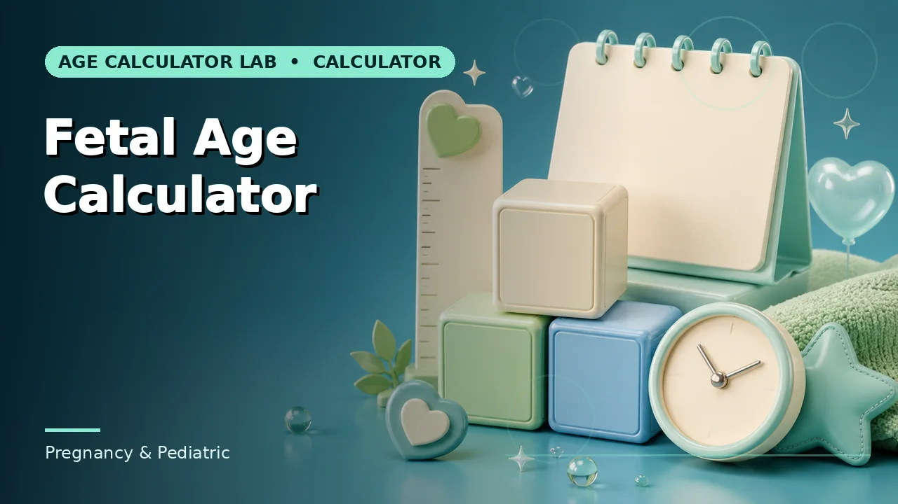
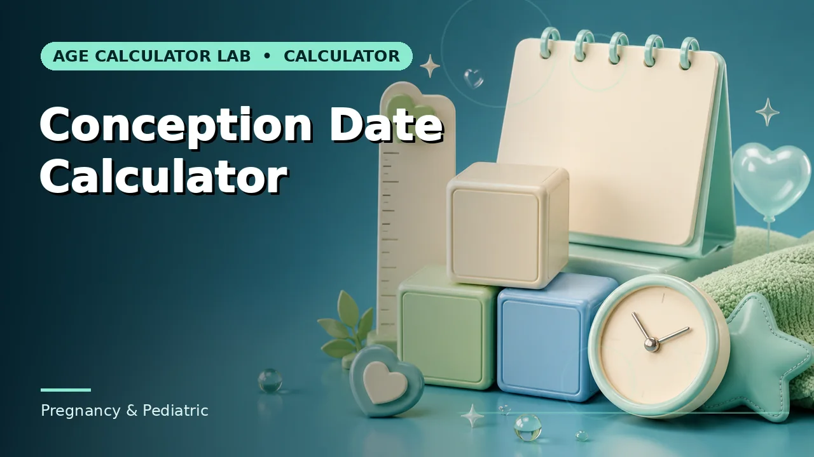

Quick answer
Almost all clinical care uses gestational age. If a figure is about two weeks off what you expected, the two measures are the likely reason.
Why the clock starts before conception
Gestational age is counted from the first day of the last menstrual period — a date that can actually be observed and recorded. Conception cannot be, in a spontaneous pregnancy, so the convention anchors on the event that can be dated and accepts a systematic offset in exchange for reliability.
The offset is roughly two weeks, because conception typically occurs around day 14 of a 28-day cycle. So at the moment of conception a pregnancy is already dated at about two weeks gestational age, and a "12-week" pregnancy involves an embryo that has been developing for around ten.
Use this guide with the right tool: Open the Gestational Age Calculator for gestational age from the first day of the last menstrual period. If the question shifts, compare it with the Fetal Age Calculator or the Conception Date Calculator.
Which one you will actually encounter
Gestational age is the clinical standard almost everywhere: appointment schedules, screening windows, growth assessment, viability thresholds and the 40-week due-date model all use it. If a midwife, obstetrician or scan report gives a number in weeks and days, it is gestational age unless it says otherwise.
Fetal age appears mainly in embryology, in some IVF contexts where the conception date is known, and in general-audience material that finds "time since conception" more intuitive. It is not wrong, but reading it as gestational age puts a pregnancy two weeks ahead of where care is scheduled.
The two-week rule is an approximation
The offset assumes ovulation on day 14 of a 28-day cycle. Real cycles vary in length, and the variation sits mostly in the follicular phase before ovulation — so someone with a 35-day cycle may ovulate around day 21, making the true gap closer to three weeks.
This is one of the reasons LMP-based dating gets revised after a dating scan. Ultrasound measures the embryo directly rather than inferring from a cycle assumption, which is why scan dating supersedes LMP dating when the two disagree beyond a defined tolerance.
Reading a number safely
When you see an age in weeks, check three things: whether it is gestational or fetal, what date it was measured on, and what it was derived from — LMP, a scan, or an IVF transfer date. Those three make the figure interpretable and comparable with anything else in the notes.
Where two sources disagree, the difference is very often exactly the two-week offset or a dating revision, not an error. Bringing both figures to an appointment is more useful than trying to reconcile them yourself.
Worked example
None of this is difficult arithmetic. The part worth slowing down for is deciding which convention applies before you start.
Common mistakes to avoid
- Using the two terms interchangeably. They differ by about two weeks by definition. Label which measure a figure uses.
- Assuming conception happened on day 14. Cycle length varies, and so does the offset. This is why scan dating supersedes LMP dating.
- Treating an estimate as a substitute for clinical dating. Ultrasound and clinical assessment set the working dates. A calculator explains how a figure was derived.
Use the right calculator
The calculators below apply exactly the method described here, with the assumptions visible on the page.



Frequently asked questions
Which age do scan reports use?
Gestational age, in completed weeks and days, unless the report explicitly states otherwise.
Why is a pregnancy 'two weeks along' at conception?
Because the count starts at the last menstrual period, which precedes conception by roughly two weeks under the standard model.
Can I convert between them reliably?
Only approximately. Subtracting two weeks is the convention, but the real offset depends on cycle length and ovulation timing.